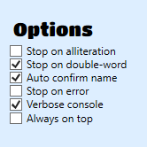

Set a nameplate with a small icon, no scribbles in the background and high contrast.
Use the options to stop at alliterations or double-words.
Add patterns like * Golden Hotdog. Exact matches will stop the program, whereas * is a wildcard.
Partial wildcards don't work: L* S*ing Ham*
With pools, you can select a bunch of first, second and third names. Any combination of them will match.
Is this tool legal?
Yes. The Mediatonic EULA states that a hack or a cheat is defined as a tool giving you a competitive advantage. Since your name is not making you faster, we should be good. Indeed, Oliver himself stumbled accross my tool and approved it indirectly. He even recommended it :)
Possible Name Occurrences
When adding patterns or configuring pools, you will see all available names within the program.
I also kindly refer you to this list. There are some discrepancies due to spelling issues and changed names of Mediatonic's side. The name list of this tool has been statistically proven correct.
Options
Stop on Alliteration

The software will stop rerolling your name, whenever all three words start with the same letter.
Examples:
Chic Chasing Crown
Gifted Gaming Goliath
Stop on double-word
The software will stop rerolling your name, whenever two out of three words start with the same 4 letters.
Examples:
Bouncy Yeeted Yeeter
Nifty Dancing Dancer
Attention: Beware that the double-words are not hardcoded. Note the following counter examples: Gaming and Gamer don't share the same first four letters. Infallible and Fall neither. You would have to add these combinations manually. On the other hand, Charging Charmer would match since the first four letters are equal. It's a bit of a compromise-option.
Auto confirm name
When you are rerolling your name, it is not instantly stored to your account. You could at any time Alt+F4 the game, and you would keep the name you started with. This means, you can roll for a while, and if you are not happy with the results, just terminate the game process, and you can safely keep your old name. Let's say, you are called Good Fall Guy, but you want to go for a * Fall Guy. You are hoping for Best Fall Guy or Great Fall Guy, but you get Diggly Fall Guy or sth, which you don't want.
With this option unchecked, you can now just Alt+F4 the game, and keep your Good Fall Guy you started with.
So why should you enable it anyway then? Because if you idle for too long, you get disconnected from the server. Let's say you run the tool overnight. After 1hour, it finds just the perfect name.
But until you wake up, you idle 8 hours in the profile page. Once you come back, you want to press ESC to return to the main menu and to definitely store your new name.
But by that time, you are timed out and all you will see is an error. You would loose your newly rolled name! Thus, the engine will press ESC for you while you are still connected.
Recommendation: Have it checked unless you read and understood what I just wrote, then decide on your own.
Stop on error
Sometimes, things may go wrong. Imagine you get your desired name, but the software doesn't recognize it. With this option, the program will halt, without it, it will continue. Realistically, chances are super low that the error occurs on just that single perfect name. I spent a lot of effort to detect even unclear names on bad nameplates. The disadvantage of the option is, that if you want to run the program over night. It would be uncool if it stops after just a few minutes but you expected it to test thousands of names. Decide for yourself, if you want to be safe or if you want to take the risk of skipping your perfect name.
Note that after 10 consecutive major errors, or on irregularities, the engine stops regardless of your setting. For example, when your profile page is not open or names do not change for any reason.
Recommendation: Test the software while you sit in front of your computer. Watch the console. Let it run for a while. Observe if it runs well (it finds almost all names at the first parsing attempt). If it does, chances are high that it will do so for most if not all cases. Then, enable the option if you are actively on your computer and can react on errors, but disable it if you run it overnight.
Always on top
This will cause the name finder to be always on top, even over Fall Guys when it is in focus. This option is meant for single-monitor-users to have quick access to the stop button. When using this option, you still have to give Fall Guys keyboard-focus.
Warning: Do not cover the name with the always-on-top Name Finder. This will break the functionality!
Patterns
You can add, edit and remove patterns by using the proper buttons. When editing a pattern, just enter the name you want or use the dropdown menus. You have to select all three names. There is the option to add a * as a wildcard or placeholder. Whatever will be rolled on that position, it will match.
Examples
* Gaming Gamer
Good * Yeeter
* * Hotdog
The pattern * * * would match to everything.
Attention: You can not use the star to wildcard single parts of a name. The following example does not work.
Good Yeeted Yeet*
You have to record two patterns for this case as shown below. Even better, you could use pool matching for this case.
Good Yeeted Yeeter
Good Yeeted Yeetus
Matches on Always Adoring Acrobat, but not on Always Beaming Champion
Pools
When using pools, you can select a bunch of first, second, and third names. Any combination of these will then match. Consider the following example:
First Names Selected: Always, Best
Second Names Selected: Chilling, Dancing
Third Names Selected: Eagle, Fish
In this case, the engine would stop at all eight combinations of these, for example at Always Chilling Eagle, Always Dancing Fish or Best Chilling Fish.
Pools, Pattern and Options can be freely combined.
Matches on any of the eight possible combinations.
Setting up Fall Guys
Nameplate
The software takes screenshots of the ingame-footage. Thus, the result quality depends on your nameplate. Obey the following rules, whereas their importance goes from very high to high.
Nameplate must not have scribbles or drawings in its background. It should be as unicolor as possible.
The left-side graphic of the nameplate should be as far away from your name as possible. If it's too large, parts of it may get captured in the screenshot. This usually gets filtered, but may not be optimal.
The nameplate should have a high contrast. The screenshot will anyway be transformed to monochrome, so its not massively important, but try to avoid yellow plates anyway.
Important: Observe the program's behavior for a while before you leave it running afk, to ensure your settings work well (see below)
Recommended Plate Unicolor background. Only few flame tips interfere. Sufficient contrast.Recommended Plate Thin image. High contrast. Binary background usually no problem.Bad Plate Dino is too big. Circles in background. Low contrast.Bad Plate The contrast is too low. Note the failed monochrome transformation.Bad Plate Text and image overlap, and image is white You can use this if you want to challenge my programming skills :D
Nickname
On failures, the screenshot size gets varied to tickle the OCR engine. This means your nickname may also be captured. If your nickname is similar to a possible name, it may actually get matched instead of your actual name. Thus the rules are:
Choose a simple nickname, one word only. Less words are better.
Your nickname shall not be similar to an actual possible name.
Recommended Nickname: Parkour! or Tryhard (Far away from any possible name and only one word)
Bad Nickname: Rookie (Rookie is a possible name, the engine may get confused)
Bad Nickname: Pro Slimb Climber (Three words, three potential confusion points)
This of course only applies if you're game is running in English.
Terrible Setup. Contrast too low. The third word will often fail. Nickname is a name possibility. Will often result in "Rocky Singing Rookie"Plate bad, nickname good. Bright artifacts at right do interfere. Snowflake may not be parsed every time. Since parkour is no name option, this will at least not result in "Special Bitter Parkour"
Resolution and Windowed Mode
The higher the resolution, the better it will work. 1080p and larger is recommended. The engine is very robust and will also work on 720p, but it is not recommended.
The tool has been tested for 16:9 aspect ratios with the exception of 1920x1200 (16:10) also being supported (cause I have that :D). 21:9 ratios should also work. It works in full screen, as well as windowed. If you only have one monitor, windowed mode could be interesting to observe the console. If you have another aspect ratio, you can run Fall Guys in windowed 16:9 mode.
Warning: The lower the resolution, the less accuracy! The effect is well noticeable at resolutions lower than 1920x1080!
Letting it run
After everything is setup, navigate to your profile page, so that the name can be rerolled. Press the start button and ensure that Fall Guys is in keyboard-focus (it must be the active window). You can move the console and the NameFinder to your secondary screens or just minimize them. Single-monitor-users can also use the always-on-top option, but do not cover the name with the tool!
Console
If you like, you can show the console. This gives you information about what the software is doing. This helps a lot in the beginning to detect if it runs smoothly with your settings or if it is struggling. Just move it to your secondary monitor, if available. You can also run Fall Guys in windowed mode, if you only have one monitor. The console cannot be set to always-on-top.
Attention: Don't mark text on the console. This halts the program. If you are stuck, just click into the console and press a few times ENTER.
Attention: Don't close the console. Imagine the console is the program's mind and the UI is the body. As we know from Matrix, the body can't exist without a mind.
Ensure it works well
Once you are set up, you should check that the name finder works well for your configuration and that it's not struggling. The tool is quite a tryhard and even works for very poor settings, but if you try to go for its limitations, you may get a false parsing result here and there. Examples were mentioned above. To ensure it works well, set the console output to verbose and observe the console a while. If it reads a viable name at parsing attempt 0-0 most of the time, you are good to go. If it is regularly going up to, say parsing attempt 5-5 and if sometimes even the approximate matching algorithm triggers, you may revisit your settings. Note that it is normal that not every single name gets parsed at 0-0, even under ideal conditions. For example, when they are split on two lines.
Advanced
File based pattern and pool edits
If you'd like, you can navigate to C:\Users\[your name]\AppData\Roaming\FallGuysNameFinder\ and edit the files patterns.txt and pool.json manually. This may be faster for you, if you are after many explicit combinations. But watch your spelling! The tool will not start or may crash when you have spelling issues or format errors in those files.
Attention: The tool is not made for manual file edits. This is really only for advanced users. Restart the tool after manual edits, so the UI reloads the files.
Statistics
In the folder above, you find a file stats.json. It may be interesting to see which name rolled how often.
Logs
The most recent log files are also stored in the folder mentioned above. It contains the same information as shown on the console. If you report a bug, please include relevant parts of the log.
Screenshots
The screenshots folder within the location mentioned above contains screenshot of parsing fails. They may also be helpful for debugging. Only failures are stored, so it should not fill up your disk space.
How to uninstall
I made no installer / uninstaller for this small software project. Thus, you have to do it manually. Just delete your unzipped files and also delete this folder: C:\Users\[your name]\AppData\Roaming\FallGuysNameFinder\.